Summary
This article outlines the process of adding Active Directory Federation Services (AD FS) to SbPAM as an Authentication Connector via SAML. The article is split into two sections, Steps for AD FS and Steps for SbPAM. The AD FS section must be completed first.
Instructions
Steps for Active Directory Federation Services (AD FS)
- Launch AD FS Management on the AD FS server:
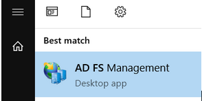
- Right-click on Application Groups and select Add Application Group…
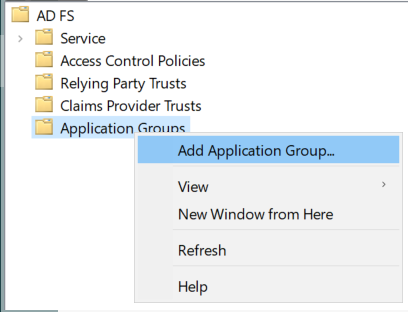
- Select Native application accessing a web API and enter "SbPAM (SAML)" as the Name, then click Next.
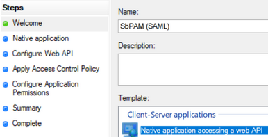
- Copy the Client Identifier value; you will need that when configuring SbPAM.
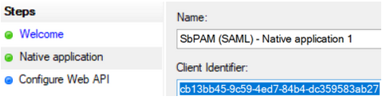
- For the Redirect URI, use the following URI with the hostname of the SbPAM server customized to match your environment. For example: https://<sbpam-server>:6500/samlSigninCallback. Click Add, then Next.
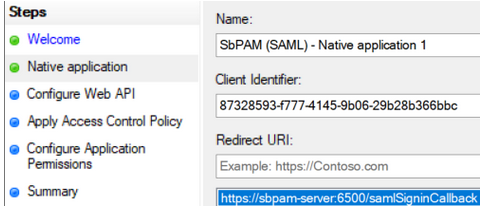
- For the Identifier of the Web API, enter sbpamsaml.stealthbits.com, click Add, then click Next.
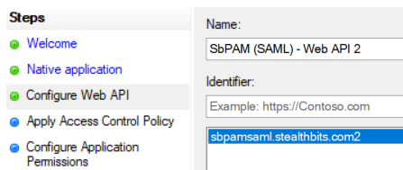
- For Apply Access Control Policy, leave all defaults and then click Next.
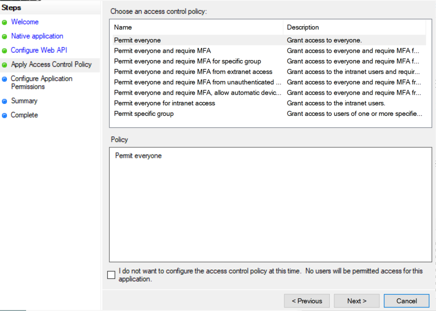
- For Configure Application Permissions, enable the following and then click Next.
• allatclaims
• email
• openid
• profile
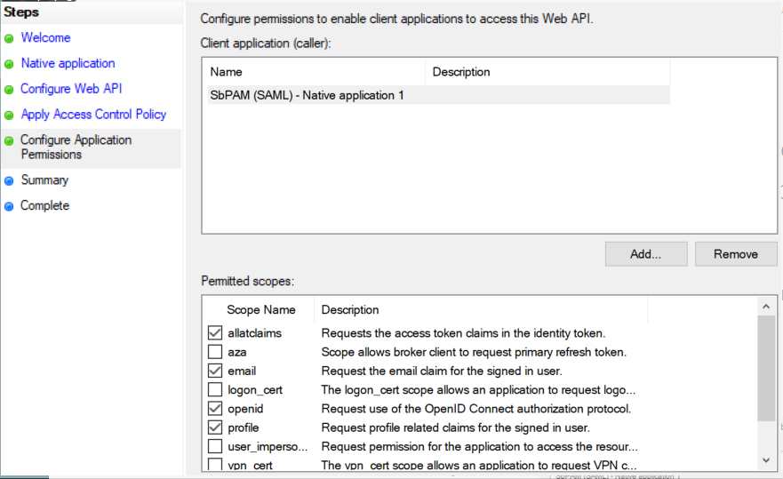
- Click Next on the remaining pages until the wizard completes.
- In the left sidebar of AD FS, click on the Relying Party Trusts folder. In the right sidebar, click Add Relying Party Trust...
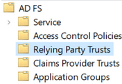 - Select Claims aware and click Next.
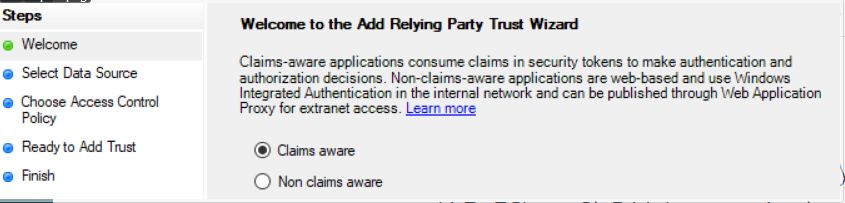
- For Select Data Source, select Enter data about the relying party manually and click Next.
- For Specify Display Name, enter "SbPAM (SAML)" and click Next.
- For Configure Certificate, leave the default values and click Next.
- For Configure URL, check Enable support for the SAML 2.0 WebSSO protocol and enter your AD FS server's FQDN followed by "/adfs/ls". For example: https://adfs-server.domain.com/adfs/ls. Click Next.
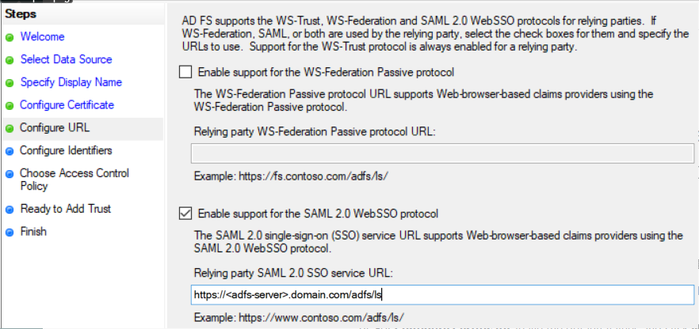
- For Configure Identifiers, use the value sbpamsaml.stealthbits.com, click Add, then click Next.
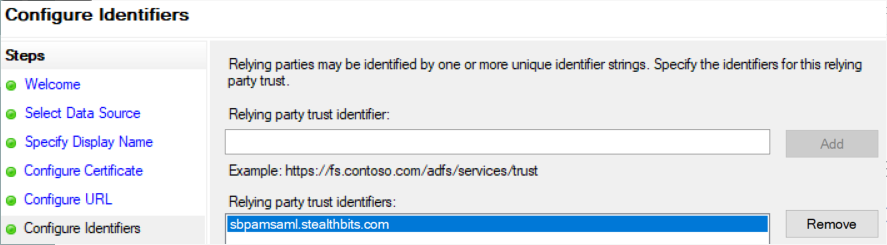
- Leave Choose Access Control Policy as default values and click Next, then click Next through the remaining pages to finish the wizard.
- When the wizard closes, it a window for Issuance Transform Rules will automatically open. Click Add Rule...
- Select Send LDAP Attributes as Claims, and click Next.
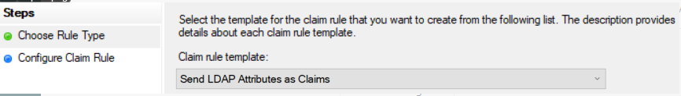
- Name the rule "Send attributes", select "Active Directory" as the Attribute store, map the following LDAP Attributes to Outgoing Claim Types, click Finish, then click Apply and OK.
• SAM-Account-Name > Name
• User-Principal-Name > UPN
• E-Mail-Addresses > E-Mail Address
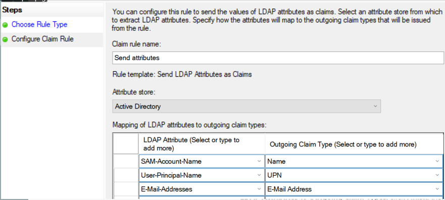 - Double-click on the Relying Party Trust created in the previous steps (named "SbPAM (SAML)"), and navigate to the Endpoints tab.
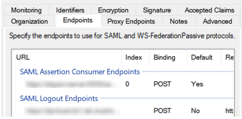
Add the following endpoints (click Add SAML...):
Endpoint type: SAML Assertion Consumer
Binding: POST
Index: 0
Trusted URL: https://<sbpam-server>:6500/samlSigninCallback
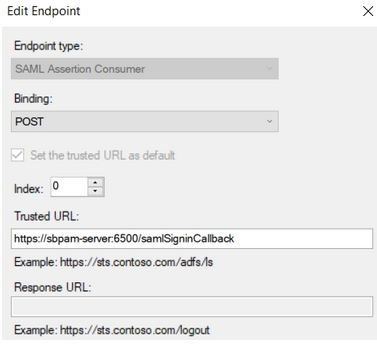
Endpoint type: SAML Logout
Binding: POST
Index: 0
Trusted URL: https://<adfs-server>.domain.com/adfs/ls/?wa=wsignout1.0&wreply=https://<sbpam-server>:6500
Response URL: https://<sbpam-server>:6500/login
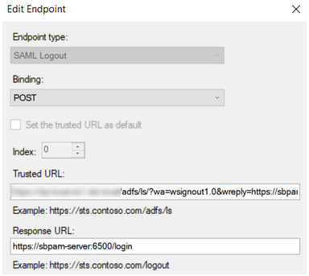
Click OK, Apply, then OK.
- This completes the AD FS configuration portion of the guide.
Steps for SbPAM
Once the Steps for AD FS have been completed, take the following steps in SbPAM to add AD FS as an Authentication Connector via SAML.
- As an SbPAM Admin, navigate in SbPAM to Configuration > Authentication, and click the green "+" button to add a new Authentication Connector.
- Give the new connector a name, description (optional), and a Connector Type of "SAML".
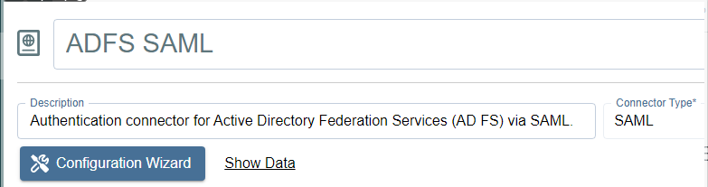
- Click on Configuration Wizard.
- On the wizard's Configure Client page, enter the following values:
Signin URI: https://<adfs-server>.domain.com/adfs/ls
Callback Address: https://<sbpam-server>:6500/samlSigninCallback
CORS: https://<sbpam-server>:6500
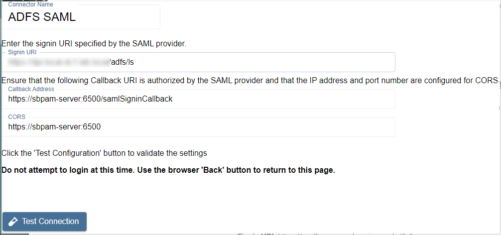
Click Test Connection. If brought to a log-in page, click Back in your web browser and then Next in the SbPAM wizard. If the page refreshes and brings you back to the SbPAM wizard, you should also click Next to proceed.
- Select "Unspecified" for the Name ID Policy, and add a certificate if required. Then, click Login and sign-in to AD FS using Active Directory credentials.
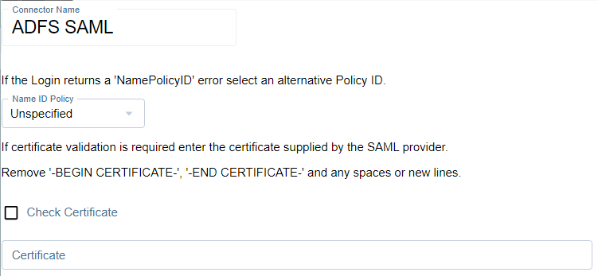
When redirected back to this page after signing-in to AD FS, if the message at the bottom reads "Login was successful" then click Next.
- Locate a mapping you would like to use when users sign-in to SbPAM using AD FS, such as an email address or UPN.
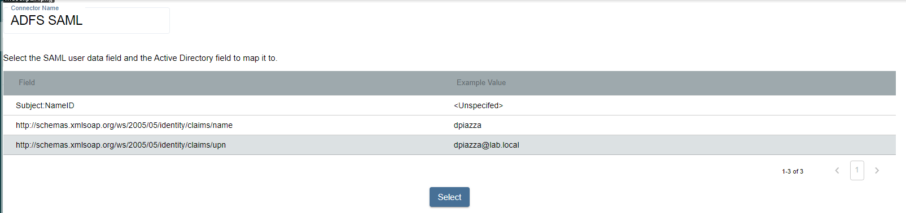
Click on the mapping, click Select, select the matching Active Directory mapping from the displayed dropdown, then click Next.
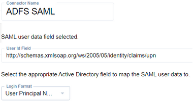
- For the Signout URI and Signout Callback URI, use the following values:
Signout URI: https://<adfs-server>.domain.com/adfs/ls/?wa=wsignout1.0&wreply=
Signout Callback URI: https://<sbpam-server>:6500
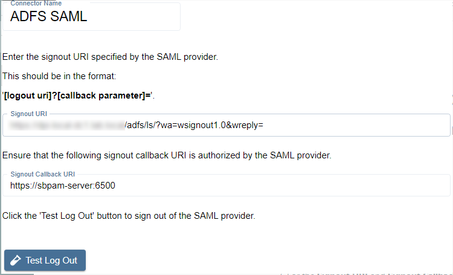
Click Test Log Out, then Finish to complete the wizard. AD FS has now been added to SbPAM (via SAML) as an Authentication Connector.
- The last step is to navigate to specific users in SbPAM's Users & Groups menu, and assign the AD FS SAML authenticator.
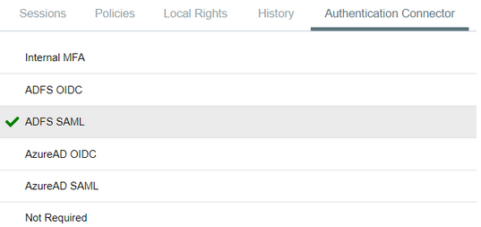
When using the SAML log-in option, the user will be redirected to sign-in to AD FS. Upon successful authentication, the user will be redirected to the SbPAM UI as their now signed-in user.